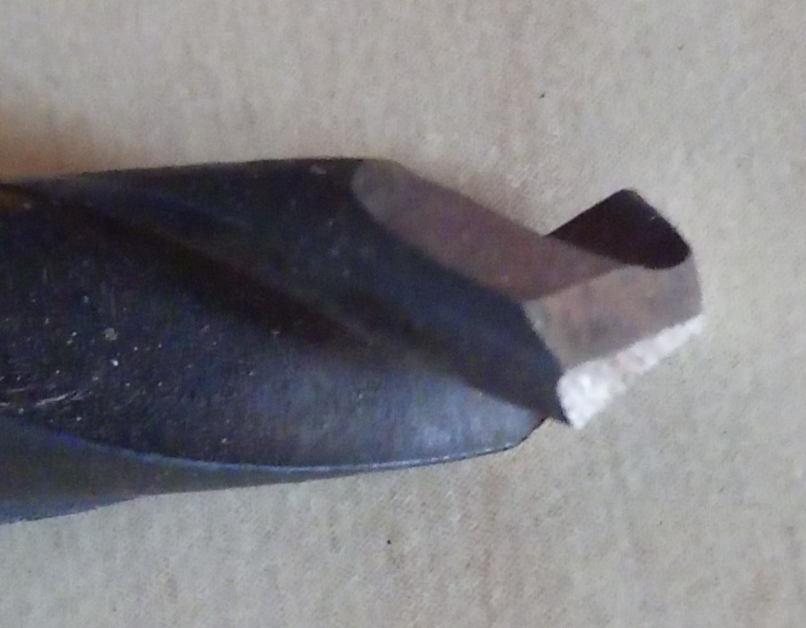
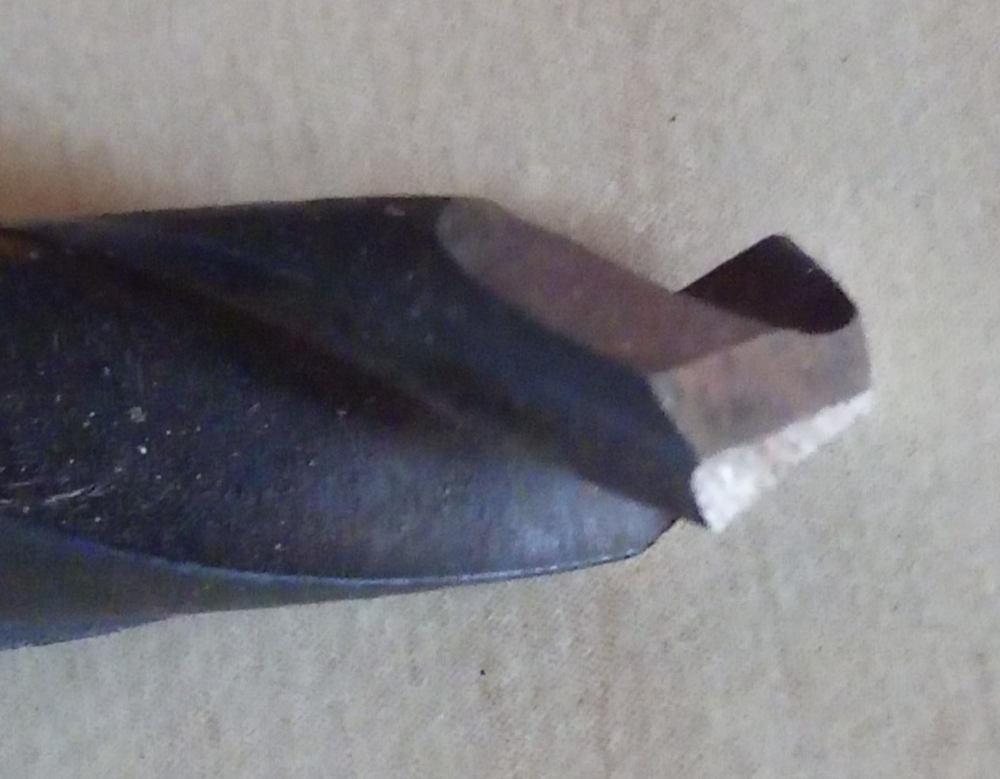

Co nabízím
Cena broušení nožů a vrtáků
Cena za broušení nožů a vrtáků se liší v závislosti na aktuálním stavu výrobku. Pokud máte nůž nebo vrták, který je pouze tupý, cena se bude nacházet na spodním konci spektra. V tomto případě je broušení většinou rychlé a efektivní, což znamená, že vám mohu nabídnout konkurenceschopnou cenu.
Opravy poškozených výrobků
Nicméně, pokud je výrobek poškozený, například má zlomené zuby nebo hroty, nebo je neodborně nabroušený, bude vyžadovat složitější opravy. Tyto opravy zahrnují více času a preciznosti, což logicky zvyšuje cenu služby. U těchto případů je důležité, abychom nejprve posoudili rozsah poškození a určili, jaké kroky je třeba podniknout k obnovení funkčnosti a kvality výrobku.
Techniky broušení
Používám různé techniky broušení, které se liší podle typu výrobku a požadované úpravy. Například pro kuchyňské nože často preferuji ruční broušení, které poskytuje lepší kontrolu nad tvarem a ostrostí čepele. Na druhou stranu, pro vrtáky a jiné nástroje mohu využít brusné stroje, které zajistí rychlejší a efektivnější proces broušení. Každá technika má své výhody a ovlivňuje konečnou cenu služby.
Broušení přímo u vás
Co je ale ještě lepší, mohu brousit přímo u vás, protože mám k dispozici speciální zařízení, které vozím sebou. Tímto způsobem vám mohu nabídnout pohodlné a efektivní služby přímo na místě.
Kontakt a individuální přístup
Pokud máte jakékoli dotazy nebo potřebujete další informace, neváhejte mě kontaktovat. Jsem tu pro vás a rád vám poskytnu individuální přístup k vašim potřebám. Bez ohledu na to, zda potřebujete pouze základní broušení nebo složitější opravy, jsem připraven vám pomoci a zajistit, aby vaše nástroje opět splnily své funkce.
Příklady mé práce

 
